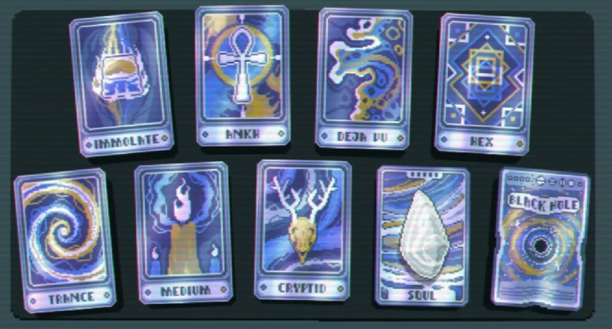

The last consumable type in Balatro is the spectral card. All of these are massive upgrades from the
tarot cards, making them rarer and being found in their own packs. The spectral cards in Balatro are
The Familiar, Grim, Incantation, Talisman, Aura, Wraith, Sigil, Ouija, Ectoplasm, Immolate, Ankh, Deja Vu,
Hex, Trance, Medium, Cryptid, The Soul, Black Hole.

